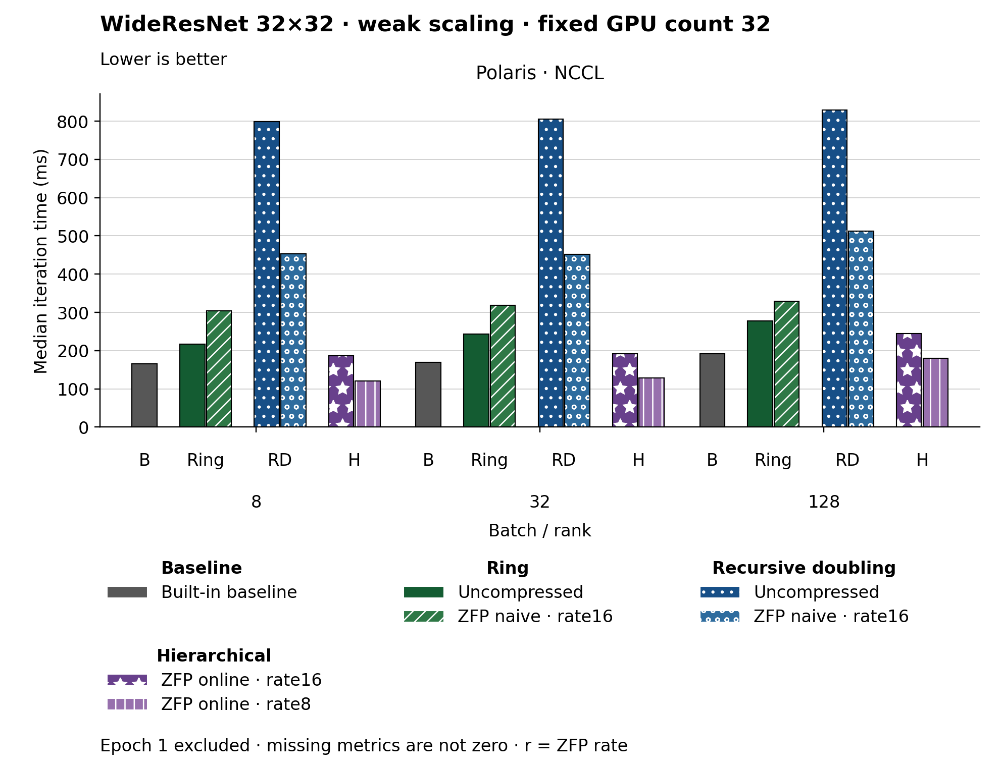

The figure uses bars. Families and methods are identified by text and patterns in addition to color. The metric is Median iteration time (ms). Polaris · NCCL, Batch / rank 8: Hierarchical · ZFP online · rate8 has the lowest plotted value, 120.035. Polaris · NCCL, Batch / rank 32: Hierarchical · ZFP online · rate8 has the lowest plotted value, 128.770. Polaris · NCCL, Batch / rank 128: Hierarchical · ZFP online · rate8 has the lowest plotted value, 180.485. Epoch 1 is excluded. Values are medians; when repeated runs are available the selected repeat policy is median. These are not confidence intervals across repeated jobs. Missing or unrecorded metrics are omitted, not set to zero.
| Panel | Batch / rank | Method | Value | Runs |
|---|---|---|---|---|
| Polaris · NCCL | 8 | none | 165.68 | 1 |
| Polaris · NCCL | 8 | ring | 216.63 | 1 |
| Polaris · NCCL | 8 | ring_zfp_naive:16 | 304.54 | 1 |
| Polaris · NCCL | 8 | hierarchical_zfp_online_coll:16 | 186.415 | 2 |
| Polaris · NCCL | 8 | hierarchical_zfp_online_coll:8 | 120.035 | 2 |
| Polaris · NCCL | 8 | recursive_doubling | 798.57 | 1 |
| Polaris · NCCL | 8 | recursive_doubling_zfp_naive:16 | 453.31 | 1 |
| Polaris · NCCL | 32 | none | 168.93 | 1 |
| Polaris · NCCL | 32 | ring | 242.72 | 1 |
| Polaris · NCCL | 32 | ring_zfp_naive:16 | 317.93 | 1 |
| Polaris · NCCL | 32 | hierarchical_zfp_online_coll:16 | 192.125 | 2 |
| Polaris · NCCL | 32 | hierarchical_zfp_online_coll:8 | 128.76999999999998 | 2 |
| Polaris · NCCL | 32 | recursive_doubling | 804.87 | 1 |
| Polaris · NCCL | 32 | recursive_doubling_zfp_naive:16 | 452.04 | 1 |
| Polaris · NCCL | 128 | none | 191.2 | 1 |
| Polaris · NCCL | 128 | ring | 277.25 | 1 |
| Polaris · NCCL | 128 | ring_zfp_naive:16 | 329.47 | 1 |
| Polaris · NCCL | 128 | hierarchical_zfp_online_coll:16 | 243.985 | 2 |
| Polaris · NCCL | 128 | hierarchical_zfp_online_coll:8 | 180.485 | 2 |
| Polaris · NCCL | 128 | recursive_doubling | 829.34 | 1 |
| Polaris · NCCL | 128 | recursive_doubling_zfp_naive:16 | 512.46 | 1 |